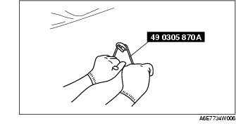

Base removal
1. Remove the rearview mirror.
2. Wind each end of a wire around a bar.
- • Using the SST (piano wire) with bare hands can cause injury. Always wear gloves when using the SST (piano wire).
- • Use a long sawing action to spread the work over the whole length of the SST (piano wire) to prevent it from breaking.
3. Saw through the sealant to remove the base.
